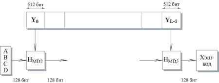
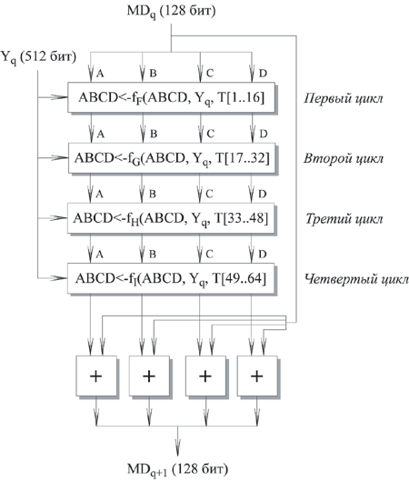

|
Лабораторная работа №5
Компьютерная реализация хэш-функций на примере MD5.
Реализовать программные средства формирования хэш-функций на примере
алгоритма MD5.
ТЕОРЕТИЧЕСКИЕ СВЕДЕНИЯ
Алгоритм MD5. Хэш-функция MD5
Алгоритм MD5 получает на входе сообщение произвольной длины и создает в
качестве выхода дайджест сообщения длиной 128 бит.
Алгоритм состоит из следующих шагов:

Рисунок 1 – Логика выполнения MD5
-
Шаг 1: добавление недостающих битов
Сообщение дополняется таким образом, чтобы его длина стала равна 448 по
модулю 512 (длина≡448 mod 512).
-
Шаг 2: добавление длины
64-битное представление длины исходного (до добавления) сообщения в битах
присоединяется к результату первого шага. Если первоначальная длина больше,
чем 264, то используются только последние 64 бита.
Рисунок 2 – Структура расширенного сообщения
-
Шаг 3: инициализация MD-буфера
Используется 128-битный буфер для хранения промежуточных и окончательных
результатов хэш-функции. Буфер может быть представлен как четыре
32-битных регистра (A, B, C, D). Эти регистры инициализируются следующими
шестнадцатеричными числами:
А = 01234567; В = 89ABCDEF; C = FEDCBA98; D = 76543210
-
Шаг 4: обработка последовательности 512-битных (16-словных) блоков
Основой алгоритма является модуль, состоящий из четырех циклических
обработок, обозначенный как HMD5. Четыре цикла имеют похожую структуру, но
каждый цикл использует свою элементарную логическую функцию, обозначаемую f F, fG,
fH и fI соответственно.

Рисунок 3 – Обработка очередного 512-битного блока
Каждый цикл принимает в качестве входа текущий 512-битный блок Y q, обрабатывающийся
в данный момент, и 128-битное значение
буфера ABCD, которое является промежуточным значением дайджеста, и
изменяет содержимое этого буфера. Каждый цикл также использует четвертую
часть 64-элементной таблицы T[1 ... 64], построенной на основе функции sin.
i-ый элемент T, обозначаемый T[i], имеет значение, равное целой части от 2 32 * abs
(sin (i)), i задано в радианах. Так как abs (sin (i))
является числом между 0 и 1, каждый элемент Т является целым, которое может
быть представлено 32 битами. Таблица обеспечивает "случайный" набор
32-битных значений, которые должны ликвидировать любую регулярность во
входных данных.
Для получения MDq+1 выход четырех циклов складывается по модулю
232 с MDq. Сложение выполняется независимо для
каждого из четырех слов в буфере.
-
Шаг 5: выход
После обработки всех L 512-битных блоков выходом L-ой
стадии является 128-битный дайджест сообщения.
ЗАДАНИЕ:
-
Изучить теоретические сведения.
-
Создать программы, читающие данные из файла и формирующие в качестве
выхода дайджест сообщения длиной 128 бит по алгоритму MD5 на языке
программирования С++.
-
По результатам каждой работы студентом должен быть представлен и
защищен отчет.
Содержание отчета включает:
-
Титульный лист
-
Постановку задачи и описание использованных алгоритмов.
-
Блок – схему алгоритма.
-
Распечатку скриншотов результатов ввода данных и исполнения программы.
-
Распечатку программного кода.
-
Вывод.
|
|